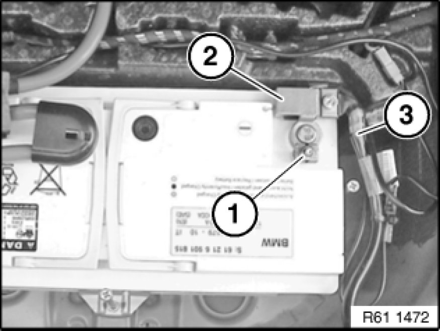

Disconnecting and Connecting Battery Negative Lead
61 20 900 - Disconnecting and connecting battery negative lead

Warning!
Observe safety instructions Service Precautions for handling vehicle battery.
Follow instructions for disconnecting and connecting battery Instructions for Disconnecting and Connecting Battery.
Observe notes on power supply / on intelligent battery sensor (IBS).

Necessary preliminary tasks:
- Remove luggage compartment floor trim 51 47 101 Removing and Installing/Replacing Luggage Compartment Floor Trim Panel

Version with intelligent battery sensor (IBS):
Loosen nut (1). Tightening torque 61 21 1AZ [1][2]Mechanical Specifications.
Important!
Do not under any circumstances use force to pull off pole shoe.
Do not under any circumstances release socket head cap screw of IBS (2).
Detach battery negative lead (3) with IBS (2) in upward direction from battery, lay to one side and secure.

Version without intelligent battery sensor (IBS):
Slacken nut of battery negative lead (1). Tightening torque 61 21 1AZ [1][2]Mechanical Specifications.
Important!
Do not under any circumstances use force to pull off pole shoe.
Detach battery negative lead (1) towards top from battery, lay to one side and secure.